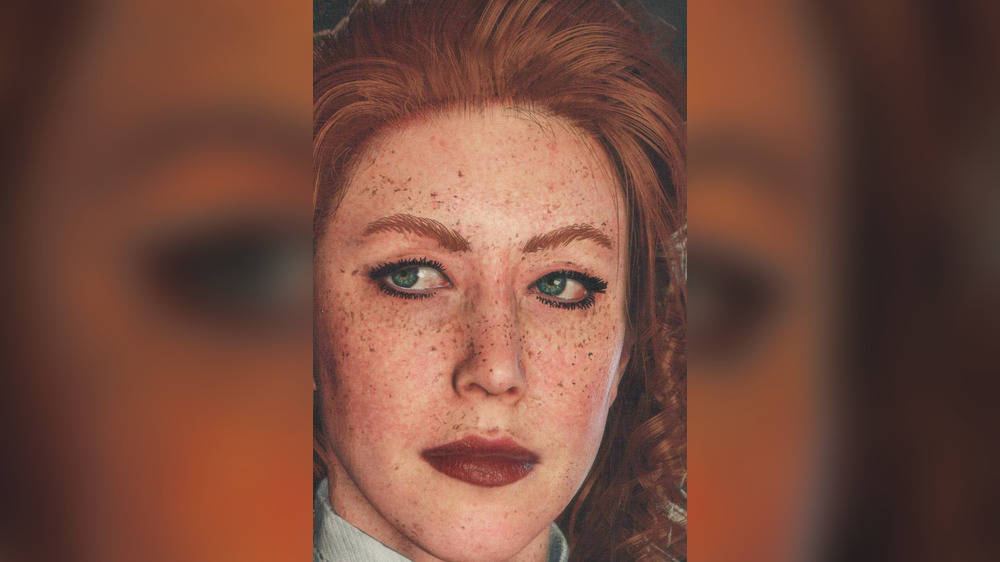
Personnage · Gang Van der Linde
Molly O'Shea
Molly O'Shea est un personnage secondaire de Red Dead Redemption 2 (2018), dont l'action se déroule en 1899. Jeune Irlandaise de Dublin, elle est la compagne de Dutch van der Linde et vit sous sa tente, à l'écart des tâches du camp. Au fil des déménagements de la bande, Dutch prend ses distances, et elle se dispute avec lui comme avec Karen Jones. Elle disparaît après l'échec du braquage de la banque de Saint-Denis. À Beaver Hollow, elle revient ivre et affirme devant tout le monde avoir renseigné les Pinkerton ; Susan Grimshaw l'abat sur-le-champ. L'agent Andrew Milton révélera plus tard à Arthur Morgan qu'elle n'a jamais parlé.
Elle est interprétée par Penny O'Brien, actrice irlandaise.
- Nom
- Molly O'Shea
- Origine
- Dublin, Irlande (description de Rockstar et guide officiel)
- Mort
- 1899, Beaver Hollow (abattue par Susan Grimshaw)
- Statut
- Décédée
- Nationalité
- Irlandaise
- Affiliation
- Gang Van der Linde
- Relation
- Dutch van der Linde (compagne)
- Jeux
- Red Dead Redemption 2
- Voix
- Penny O'Brien (voix et capture de mouvement)
Biographie
Origines
Les jeux ne donnent aucune date de naissance pour Molly. Elle est irlandaise, originaire de Dublin. De sa famille, on ne sait que ce qu'elle en dit elle-même, selon un guide officiel (voir Personnalité). On ignore quand et comment elle a rejoint la bande ; en 1899, elle est la compagne de Dutch van der Linde et partage sa tente.
Red Dead Redemption 2 (1899)
Chapitre 1 : Colter
Après l'échec du braquage du ferry à Blackwater, la bande se réfugie à Colter, une ville minière abandonnée sous la neige. Dans "Outlaws from the West", Dutch revient de la ferme des Adler avec Sadie Adler et dit avoir besoin de repos. Susan Grimshaw lui désigne sa cabane et annonce que Molly va l'y conduire. Molly reste auprès de Dutch jusqu'à la fin du chapitre. Le Red Dead Wiki la cite aussi dans "Eastward Bound", la descente des montagnes vers Horseshoe Overlook, au-dessus de Valentine ; la page de la mission ne la nomme pas.
Chapitre 2 : Horseshoe Overlook
Dans "Polite Society, Valentine Style", Arthur Morgan et Uncle emmènent Karen Jones, Tilly Jackson et Mary-Beth Gaskill à Valentine. En chemin, Tilly se demande s'il aurait fallu proposer à Molly de venir, et Karen raille ses grands airs (voir Citations). D'après la page du personnage sur le Red Dead Wiki, Molly est au camp, dans "A Quiet Time", quand Lenny Summers annonce à Dutch et à Arthur que Micah Bell a été arrêté à Strawberry.
Dans "Who is Not Without Sin", Arthur ramène de Flatneck Station le révérend Swanson, ivre mort, et le porte à travers le camp jusqu'à sa tente. Molly les voit arriver et fait remarquer qu'elle se demandait quand le révérend finirait par se montrer. Ses scènes de camp du chapitre, dont sa danse avec Dutch pendant la fête donnée pour le retour de Sean MacGuire, sont racontées dans les relations. À la fin du chapitre, la bande quitte Horseshoe Overlook pour Clemens Point, au bord du lac Flat Iron, en Lemoyne.
Chapitre 3 : Clemens Point
À Clemens Point, Molly et Dutch se disputent de plus en plus souvent (voir Relations). "An Honest Mistake", dont le Red Dead Wiki attribue la mission à Molly et à Uncle, s'ouvre sur Molly qui appelle Arthur pour lui parler de Dutch. D'après la page du personnage, elle lui demande comment il trouve Dutch, assure qu'elle l'aime vraiment et commence à rappeler sa maxime selon laquelle la loyauté passe avant tout. Uncle les interrompt avec un tuyau sur un chariot de ravitaillement qu'il croit sans escorte, et Arthur part avec lui, Charles Smith et Bill Williamson.
"Blessed are the Peacemakers" s'ouvre à Clemens Point alors qu'Arthur salue Micah. Arthur demande à Molly où est Dutch. Elle l'écarte d'un geste et continue son chemin. Le Red Dead Wiki la cite aussi dans "Blood Feuds, Ancient and Modern", où les hommes chevauchent jusqu'au manoir Braithwaite pour retrouver Jack Marston ; elle ne fait pas partie des cavaliers, et la page de la mission ne la nomme pas. Le lendemain matin, dans "The Battle of Shady Belle", les agents de la Pinkerton Andrew Milton et Edgar Ross se présentent à Clemens Point. Milton propose aux autres trois jours pour disparaître si Dutch se rend. La bande refuse et part pour Shady Belle, une demeure de plantation abandonnée près de Saint-Denis qu'Arthur et John Marston vident des Lemoyne Raiders.
Quand le convoi arrive à Shady Belle, Dutch charge Susan et Simon Pearson d'installer le camp et demande à Arthur de l'accompagner. Molly interpelle Dutch et lui demande de lui parler. Dutch répond que ce n'est pas le moment et part avec Arthur. Sur la route de Saint-Denis, il se plaint à Arthur qu'elle veuille discuter alors qu'il a tant à faire, et déclare qu'il a bien plus important à penser qu'elle.
Chapitre 4 : Saint-Denis
À Shady Belle, Molly se tient à l'écart de Dutch et de la plus grande partie du camp ; ses scènes de camp du chapitre, dont la fête qui suit le retour de Jack, tiré de la demeure d'Angelo Bronte, et la tentative de Karen pour lui parler sur le ponton, sont racontées dans les relations. Dans "Horsemen, Apocalypses", les O'Driscoll renvoient à cheval dans le camp le corps mutilé de Kieran Duffy, puis attaquent Shady Belle. Molly ne prend pas part au combat. Comme pour les autres membres qui restent à l'écart du combat, sa mort fait échouer la mission. Après la bataille, elle parle à Arthur de la mort de Kieran et de celle de Sean (voir Relations).
Molly fait partie des membres qui ne participent pas à "Banking, The Old American Art", le braquage de la banque de Saint-Denis. Le coup échoue. Hosea Matthews et Lenny sont tués. John est arrêté. Dutch, Arthur, Micah, Bill et Javier Escuella s'enfuient sur un navire et échouent sur l'île de Guarma. Les scènes de camp de Molly disparaissent définitivement après le braquage.
Chapitre 5 : Guarma
Les rescapés de Guarma retrouvent la bande à Lakay, dans le bayou, et les Pinkerton attaquent le camp dans "Fleeting Joy". Ensuite, Arthur peut demander aux autres où est passée Molly ; elle a disparu depuis le braquage. D'après la page du personnage sur le Red Dead Wiki, plusieurs membres, dont Susan, s'inquiètent de son absence. Dutch décide que la bande doit remonter vers le nord. Dans "That's Murfree Country", Arthur et Charles débarrassent une grotte de Beaver Hollow, dans Roanoke Ridge, de la Murfree Brood, et la bande s'y installe.
Pendant l'installation du nouveau camp, Uncle arrive avec Molly, ivre ; d'après le Red Dead Wiki, il dit l'avoir trouvée à Saint-Denis. Devant toute la bande, elle reproche à Dutch de l'ignorer. D'après la page du personnage, elle lui crie qu'elle l'aimait et le traite, par dérision, de Seigneur Dieu tout-puissant ; Dutch lui fait remarquer qu'elle est ivre et lui demande de se calmer. Elle affirme ensuite avoir renseigné les Pinkerton sur le braquage de la banque de Saint-Denis, dans l'espoir, toujours selon cette page, que Milton et Ross tuent Dutch. Dutch sort son revolver pour l'abattre. Arthur tente de l'en empêcher ; sur la page du personnage, il dit que Molly n'est qu'une idiote qui ne mérite pas que Dutch perde son temps. Avant que Dutch ne tire, Susan lui tire dessus au fusil, en plein ventre, et la tue.
Susan rappelle à Arthur que Molly connaissait les règles. Elle ordonne à Bill et à Pearson de brûler le corps. Cette exécution clôt le cinquième chapitre, dont l'achèvement débloque le trophée No Traitors. Karen s'en prend à Susan juste après le coup de feu (voir Relations).
Chapitre 6 : Beaver Hollow
Dans "Red Dead Redemption", dernière mission du chapitre, Arthur et Sadie se rendent à Van Horn pour libérer Abigail Marston, aux mains de Milton. Milton tient Arthur en joue et lui dit que tous les membres de la bande n'avaient pas ses scrupules, puis nomme Micah. Arthur demande s'il parle de Molly. Milton répond que les Pinkerton ont interrogé Molly à deux ou trois reprises, qu'elle n'a jamais dit un mot et qu'ils ont dû la relâcher. Micah, en revanche, a été cueilli au retour des Caraïbes et travaille pour eux depuis. Abigail abat ensuite Milton.
De retour à Beaver Hollow, Arthur annonce à la bande que l'informateur est Micah. Dans les deux fins où Arthur retourne chercher l'argent, il affirme à Dutch, au cours de son affrontement avec Micah, que le traître est Micah et non Molly. Avec un honneur bas, il le dit après que Micah l'a poignardé à la poitrine et que Dutch, arrivé sur les lieux, a retenu Micah ; dans la même phrase, il disculpe aussi Susan et Colm.
Personnalité
La description officielle de Molly publiée par Rockstar Games en septembre 2018 dit, dans sa version française : "Fille de Dublin dont Dutch s'est entiché, du moins pour l'instant. De nature angoissée, Molly peine à se faire à la vie de cavale."
Une page de personnage tirée d'un guide officiel, reproduite sur le Red Dead Wiki, reprend cette phrase et va plus loin. Elle précise que Molly "claims to be from a well-to-do Irish family" (dit venir d'une famille irlandaise aisée), partie pour l'Amérique sur un coup de tête romantique, en quête d'aventure et de sensations. Elle les a trouvées auprès de Dutch van der Linde, mais elle attend de lui plus qu'il ne peut ou ne veut lui donner. Le guide conclut : "She considers herself a few cuts above the other gang members, which hasn't won her many supporters in camp." (elle se croit bien au-dessus des autres membres de la bande, ce qui ne lui a pas valu beaucoup d'alliés au camp).
C'est la seule femme du camp à ne faire aucune corvée. D'après le Red Dead Wiki, les autres femmes lui envient ce privilège. Quand Arthur lui suggère de les aider à nettoyer le camp, elle rétorque qu'elle n'est la servante de personne. Elle passe une bonne partie de son temps sous la tente de Dutch, à se maquiller, à se regarder dans un petit miroir ou à écrire. Au fil de l'histoire, elle s'isole de plus en plus, et quand Arthur cherche à lui parler, elle lui répond qu'elle veut être tranquille ou qu'elle n'est pas de bonne compagnie. À Shady Belle, elle arpente le ponton en marmonnant qu'on lui a menti et que tout le camp se moque d'elle, et elle chasse Arthur s'il approche. D'après la page du personnage sur le Red Dead Wiki, il lui arrive de lui crier que lui et les autres ont monté Dutch contre elle.
Dans ses propres mots
À Colter, quand Arthur lui demande si elle ne veut pas rester avec les autres pour avoir de la compagnie, elle refuse ; le Red Dead Wiki rapporte sa réponse : "Dutch is all the company I need." (Dutch est la seule compagnie dont j'ai besoin). Dans la tente de Dutch, le joueur peut lire un poème de sa main, intitulé "Uaibhreach", un adjectif irlandais qui veut dire fière, hautaine. C'est une villanelle, une forme fixe de dix-neuf vers construite sur deux refrains : "I was a girl until your call" (j'étais une jeune fille, jusqu'à ton appel) et "I've nothing left. I gave you all." (il ne me reste rien, je t'ai tout donné). Le poème évoque la Liffey, le fleuve de Dublin, et les "parasites and lackeys" (parasites et laquais) de Dutch, qui raillent un amour qu'ils n'osent pas voir. Dans la dernière strophe, elle est seule, à écrire en l'attendant.
Noms
Susan Grimshaw et Karen Jones l'appellent "Miss O'Shea". D'après le Red Dead Wiki, elle appelle Dutch "Your Majesty" (Votre Majesté).
Apparence
Le portrait du guide montre une jeune femme aux longs cheveux roux bouclés, aux taches de rousseur et au rouge à lèvres vif, vêtue d'un chemisier clair à col montant, d'un châle à franges imprimé de fleurs rouges et d'une jupe sombre. Au camp, elle se maquille plus que les autres femmes : fard à paupières et rouge à lèvres. D'après le Red Dead Wiki, ses cheveux sont à moitié relevés, le reste de ses boucles rousses tombant dans son dos, et sa tenue habituelle se compose d'un corsage vert décolleté à liseré doré, d'une jupe rouge et de bottines blanches.
Relations

Dutch van der Linde
Au début de l'histoire, Molly est la compagne de Dutch. À Horseshoe Overlook, il la courtise sous sa tente ; si Arthur se moque d'eux, Dutch défend ses sentiments et l'envoie rejoindre Bill, Javier et Charles au Smithfield's Saloon de Valentine. Un autre jour, Dutch demande à Molly à quoi il pourrait la comparer. Si Arthur est dans les parages, Dutch lui pose la question. Arthur répond qu'elle est idiote si elle croit Dutch, et lui conseille de comparer Dutch à ça. Dutch soupire devant Molly qu'Arthur n'a pas une once de poésie. À la fête du retour de Sean, ils dansent tous deux au son du gramophone de Dutch. Molly lui propose aussi une promenade, et il se fait prier.
À Clemens Point, le ton change : dès que "An Honest Mistake" est disponible, ses scènes de camp avec Dutch ne montrent plus de tendresse mais de l'indifférence, et d'après le Red Dead Wiki elle passe de moins en moins de temps sous sa tente. Le camp les y entend se disputer. Elle l'accuse de regarder une autre femme, et il la traite d'affabulatrice. Elle lui reproche de ne lui avoir témoigné aucune tendresse depuis des semaines. Une autre fois, elle lui demande pourquoi il est si froid avec elle, et il assure que tout va bien et qu'il essaie simplement de se reposer. Il la trouve envahissante et égoïste, quand elle dit seulement vouloir l'aider et se heurter à son silence. Elle l'accuse aussi de faire du charme à Mary-Beth et dit craindre d'être devenue trop vieille pour lui. À Shady Belle, il refuse de l'écouter (voir la biographie). À la fête du retour de Jack, ivre, elle lui lance qu'il a gâché sa vie. Dutch répond qu'il voit les choses autrement, et elle s'en va en lui disant de la laisser tranquille. Arthur peut ensuite glisser à Dutch un mot sur son amertume.

Arthur Morgan
Molly et Arthur se parlent peu. Quand son miroir de poche se brise, elle lui demande si sa grand-mère avait raison de dire que cela porte malheur pendant sept ans, puis le prie de lui en trouver un autre. Il peut en dénicher un dans une cabane de Martha's Swain ; cette requête n'est proposée qu'au chapitre 3, et Molly le remercie d'un cigare. À la fête du retour de Jack, il peut l'inviter à se joindre à la fête, et elle répond qu'elle n'a pas le cœur à ça.
Elle tente de lui parler de Dutch au début de "An Honest Mistake", et à Beaver Hollow il essaie d'empêcher Dutch de l'abattre (voir la biographie).

Karen Jones
Karen est la femme avec qui Molly se heurte le plus. Elle raille les grands airs de Molly sur la route de Valentine (voir la biographie). À Horseshoe Overlook, Molly lui demande des comptes sur une remarque qu'elle a faite : elle lui crie qu'elle n'est pas aussi maligne qu'elle le croit et que Dutch l'aime, elle, profondément. Karen se garde de répondre franchement, Molly jure, puis s'en va en pestant contre la méchanceté des autres filles.
À Clemens Point, Molly exige de savoir ce que Karen a contre elle, et la dispute en vient aux mains. Le Red Dead Wiki donne deux versions des coups. Sa page des événements de camp fait gifler Karen par Molly, puis Karen répliquer d'un coup de poing au visage. La page de Karen inverse : c'est Karen qui gifle Molly quand celle-ci lui saisit le bras. La page de Molly situe la bagarre à Shady Belle et ajoute que Karen menace de la tuer, Dutch ou pas, si elle lève encore la main sur elle.
À Shady Belle, Karen la rejoint sur le ponton. Molly lui ordonne d'arrêter de se moquer d'elle ; Karen répond que personne ne se moque d'elle. Molly reconnaît alors s'être toujours crue au-dessus de tout le monde, et dit que tout le camp, désormais, rit d'elle ou la prend en pitié, puis elle s'éloigne. Quand Arthur dit que Molly perd la tête, Karen répond qu'elle l'a perdue il y a des mois. Juste après la mort de Molly, Karen s'en prend à Susan. Susan invoque les règles que Molly a enfreintes ; Karen le conteste et la traite de meurtrière. D'après le Red Dead Wiki, Karen boit encore davantage après cette mort.

Susan Grimshaw
Susan dirige les tâches du camp, que Molly refuse de partager. À Clemens Point, Susan prévient Dutch que Molly est malheureuse et que son caractère pourrait causer des ennuis ; Dutch balaie l'avertissement d'une boutade sur l'inutilité de discuter avec les jeunes femmes. À Beaver Hollow, c'est Susan qui l'abat (voir la biographie).

Abigail Marston
À Clemens Point, Molly vient se plaindre de Dutch auprès d'Abigail. Abigail dit comprendre ce qu'elle ressent, puis lui explique sans détour que Dutch ne l'aime pas comme elle voudrait être aimée, et qu'elle ne veut pas la voir se ridiculiser. D'après le Red Dead Wiki, elle la trouve gentille mais pas sotte et l'invite à prendre soin d'elle. Molly le conteste et s'en va, bouleversée. Arthur fait ensuite remarquer à Abigail que Molly perd pied.

Tilly Jackson
À Horseshoe Overlook, Molly passe voir Tilly pendant qu'elle travaille. Quand Tilly lui demande un coup de main, Molly se dérobe en expliquant qu'elle est amoureuse, et Tilly lui dit de s'y mettre ou de passer son chemin. Si Arthur s'approche trop, Molly lui fait savoir que la conversation est privée. Après la mort de Molly, d'après le Red Dead Wiki, Tilly se montre peu compatissante et estime que Molly n'a eu que ce qu'elle méritait.

Mary-Beth Gaskill
À la fête du retour de Sean, pendant qu'Uncle, Karen et Sean chantent à la table de poker, Dutch et Mary-Beth essaient de convaincre Molly de se joindre à eux. À Clemens Point, Molly accuse Dutch de faire du charme à Mary-Beth (voir Dutch van der Linde). Après la mort de Molly, Mary-Beth confie à Tilly qu'elle ne s'en remet pas ; d'après le Red Dead Wiki, elle ajoute que Molly n'était qu'une amoureuse aveugle, prête à dire n'importe quoi. Le wiki cite Mary-Beth et Karen comme les membres les plus ébranlés par cette mort.

Sean MacGuire
Sean est irlandais, comme Molly. À Horseshoe Overlook, il s'assoit près d'elle et lui fait remarquer qu'ils sont tous deux loin de chez eux ; elle en convient. Il lui demande ce qu'elle pense de lui. Elle prétend ne pas avoir d'avis, et il s'éloigne en riant, assurant que ses airs pincés disent le contraire. D'après le Red Dead Wiki, il la traite un jour de "West Briton", terme qui désigne un Irlandais jugé trop anglophile. Après sa mort et celle de Kieran, elle parle des deux à Arthur (voir Kieran Duffy).

Kieran Duffy
Après la mort de Kieran, dans "Horsemen, Apocalypses", Molly en parle à Arthur, ainsi que de la mort de Sean et du silence de Dutch à son égard. D'après le Red Dead Wiki, elle est visiblement bouleversée et lui demande comment tout cela pourrait aller bien.

Uncle
Uncle interrompt sa conversation avec Arthur dans "An Honest Mistake" et la ramène ivre à Beaver Hollow (voir la biographie).

Micah Bell
Micah range Molly, avec le révérend Swanson, parmi les membres qui n'apportent rien et dont il faudrait se débarrasser. C'est lui le véritable informateur (voir la biographie).

Andrew Milton
Milton la disculpe à Van Horn (voir la biographie). D'après le Red Dead Wiki, elle a laissé les Pinkerton avec plus de questions que de réponses.

Orville Swanson
Elle commente son retour en état d'ivresse dans "Who is Not Without Sin" (voir la biographie). Micah les met tous deux dans le même sac, parmi les membres dont il veut se débarrasser (voir Micah Bell).
Compétences, armes et chevaux
La vie au camp
À Colter, Molly loge avec Dutch dans sa cabane ; à Horseshoe Overlook et à Clemens Point, elle vit sous sa tente. D'après la page du Red Dead Wiki consacrée au révérend Swanson, elle est, avec lui et Simon Pearson, l'un des seuls membres de la bande qu'on ne voit jamais commettre, préparer ou faciliter un crime.
Missions
Le Red Dead Wiki anglais recense pour Molly dix missions principales de Red Dead Redemption 2, de l'arrivée à Colter à sa mort à Beaver Hollow. Le tableau ci-dessous intègre aussi les missions où il n'est question que d'elle.
| Mission | Chapitre | Rôle de Molly |
|---|---|---|
| Outlaws from the West | 1. Colter | Au camp. Susan Grimshaw annonce que Molly va conduire Dutch jusqu'à sa cabane. |
| Eastward Bound | 1. Colter | Citée par le Red Dead Wiki ; la page de la mission, le départ pour Horseshoe Overlook, ne la nomme pas. |
| Polite Society, Valentine Style | 2. Horseshoe Overlook | Mentionnée. Sur la route de Valentine, Tilly se demande s'il aurait fallu l'emmener, et Karen se moque d'elle. |
| A Quiet Time | 2. Horseshoe Overlook | Au camp, d'après la page du personnage, quand Lenny annonce l'arrestation de Micah à Strawberry. |
| Who is Not Without Sin | 2. Horseshoe Overlook | Au camp. Elle fait un commentaire quand Arthur ramène sous sa tente le révérend Swanson, ivre. |
| An Honest Mistake | 3. Clemens Point | Donneuse de la mission avec Uncle, d'après la page de la mission. Elle appelle Arthur pour lui parler de Dutch et se fait couper par le tuyau d'Uncle. |
| Blessed are the Peacemakers | 3. Clemens Point | Au camp. Quand Arthur lui demande où est Dutch, elle l'écarte d'un geste et s'éloigne. |
| Blood Feuds, Ancient and Modern | 3. Clemens Point | Citée par le Red Dead Wiki ; elle ne fait pas partie des cavaliers partis au manoir Braithwaite, et la page de la mission ne la nomme pas. |
| The Battle of Shady Belle | 3. Clemens Point | À l'arrivée à Shady Belle, elle demande à parler à Dutch, qui l'éconduit. |
| Horsemen, Apocalypses | 4. Saint-Denis | À Shady Belle pendant l'attaque des O'Driscoll. Elle ne combat pas ; la mission échoue si elle est tuée. |
| Banking, The Old American Art | 4. Saint-Denis | Absente. Elle fait partie des membres de la bande qui ne participent pas au braquage de la banque de Saint-Denis. |
| That's Murfree Country | 5. Guarma | Tuée. Ramenée ivre à Beaver Hollow par Uncle, elle affirme avoir renseigné les Pinkerton, et Susan l'abat. |
| Red Dead Redemption | 6. Beaver Hollow | Mentionnée. Milton apprend à Arthur qu'elle n'a jamais parlé ; Arthur affirme ensuite à Dutch que le traître est Micah, pas Molly. |
Citations
Les répliques ci-dessous sont reproduites telles qu'elles sont prononcées dans le jeu, en anglais, avec la mission et la personne à qui elles s'adressent. Les répliques de Molly au camp figurent dans la section Personnalité.
Molly
I was wondering when he'd show up.
Who is Not Without Sin (RDR2, chapitre 2), quand Arthur ramène au camp le révérend Swanson, ivre. Traduction : « Je me demandais quand il allait se montrer. »Could I have a word with ya?
À Dutch, The Battle of Shady Belle (RDR2, chapitre 3), à l'arrivée de la bande à Shady Belle, après l'avoir interpellé ("Dutch?") et qu'il a répondu "Yes?". Dutch enchaîne : "Not now. Come on Arthur." Traduction : « Je pourrais te dire un mot ? » (« Pas maintenant. Viens, Arthur. »)I won't be ignored, Dutch van der Linde. I aren't him... I ain't her, or any of your stooges! You don't owe me nothing. I don't owe you nothing. Nothing!
À Dutch (RDR2 ; citation en exergue de sa page sur le Red Dead Wiki, qui ne précise pas la scène ; le récit que fait la même page de l'esclandre de Beaver Hollow, dans "That's Murfree Country", reprend ces mots). Traduction : « Je ne me laisserai pas ignorer, Dutch van der Linde. Je suis pas lui... je suis pas elle, ni un de tes larbins ! Tu me dois rien. Je te dois rien. Rien ! »
Ce qu'on lui dit, ce qu'on dit d'elle
You're over here...Miss O'Shea will show you the way.
Susan Grimshaw à Dutch, Outlaws from the West (RDR2, chapitre 1), en lui désignant sa cabane à Colter. Traduction : « C'est par ici... Mademoiselle O'Shea va vous montrer le chemin. »You think we should've asked Molly to come with us?
Tilly Jackson à Karen et Mary-Beth, Polite Society, Valentine Style (RDR2, chapitre 2), dans le chariot qui les mène à Valentine. Traduction : « Tu crois qu'on aurait dû proposer à Molly de venir ? »Oh no, Miss O'Shea is far too high and mighty now for the likes of us... or to do any real work. She's a society lady now.
Karen Jones, en réponse à Tilly, Polite Society, Valentine Style (RDR2, chapitre 2). Traduction : « Oh non, Mademoiselle O'Shea est bien trop grande dame maintenant pour des filles comme nous... ou pour faire un vrai travail. C'est une femme du monde, désormais. »Hey Molly, where's Dutch?
Arthur Morgan, Blessed are the Peacemakers (RDR2, chapitre 3), au début de la mission ; Molly l'écarte d'un geste et s'éloigne. Traduction : « Hé, Molly, où est Dutch ? »Can you believe that girl? All I've got going on and she wants to talk.
Dutch van der Linde à Arthur, The Battle of Shady Belle (RDR2, chapitre 3), en quittant Shady Belle après l'avoir éconduite. Traduction : « Tu te rends compte, cette fille ? Avec tout ce que j'ai sur le dos, elle veut discuter. »I've got far more important things to worry about right now than Molly O'Shea.
Dutch van der Linde, The Battle of Shady Belle (RDR2, chapitre 3), quand Arthur lui demande si tout va bien entre eux. Traduction : « J'ai des soucis bien plus importants en ce moment que Molly O'Shea. »Micah? You mean Molly?
Arthur Morgan à Andrew Milton, Red Dead Redemption (RDR2, chapitre 6), à Van Horn. Traduction : « Micah ? Vous voulez dire Molly ? »Molly O'Shea? We sweated her a couple of times... never talked a word, had to let her go.
Andrew Milton à Arthur, Red Dead Redemption (RDR2, chapitre 6), à Van Horn. Traduction : « Molly O'Shea ? On l'a cuisinée une ou deux fois... jamais dit un mot, on a dû la relâcher. »You're the rat, Micah. Not Molly, Dutch. Him. HIM!
Arthur Morgan, Red Dead Redemption (RDR2, chapitre 6), fin où Arthur retourne chercher l'argent avec un honneur élevé. Traduction : « C'est toi, le rat, Micah. Pas Molly, Dutch. Lui. LUI ! »You lie, Micah. You're the rat. Not Molly, Dutch. It's him. Him! Kill him! Not Molly... not Miss Grimshaw... not even Colm. It's him.
Arthur Morgan à Dutch, Red Dead Redemption (RDR2, chapitre 6), fin où Arthur retourne chercher l'argent avec un honneur bas, après que Micah l'a poignardé à la poitrine et que Dutch, arrivé sur les lieux, l'a retenu. Traduction : « Tu mens, Micah. C'est toi, le rat. Pas Molly, Dutch. C'est lui. Lui ! Tue-le ! Pas Molly... pas Mademoiselle Grimshaw... même pas Colm. C'est lui. »
Conception et interprétation
Le casting
Molly est interprétée par Penny O'Brien, actrice irlandaise originaire du comté de Wicklow, dont le nom complet est Penelope Jane O'Brien selon le Red Dead Wiki. Elle est diplômée de l'American Academy of Dramatic Arts, promotion 2012. D'après le Red Dead Wiki, elle assure à la fois la voix et la capture de mouvement du personnage. Dans un article publié par l'académie le 9 avril 2019, elle explique que c'était sa première expérience de capture de mouvement, comme pour beaucoup d'autres acteurs du jeu.
D'après la liste des personnages du jeu sur Wikipédia, qui s'appuie sur deux interviews de septembre 2019 (Bionic Buzz et The Nerd Soapbox), elle passe son audition le jour de la Saint-Patrick 2015. Selon le résumé que Wikipédia donne d'une table ronde du Long Beach Comic Con, le 1er septembre 2019, on lui avait demandé pour l'audition un accent et un tempérament franchement irlandais ; elle n'avait pas joué au premier jeu, mais en a regardé des vidéos une fois le rôle obtenu. Elle a confié à The Nerd Soapbox avoir travaillé sur le jeu pendant environ trois ans. Elle confie à l'académie que l'absence de Molly dans le premier opus lui a permis de construire le personnage de zéro.
Tournage et interprétation
Dans l'article de l'académie d'avril 2019, Penny O'Brien décrit une production tenue secrète, où les acteurs n'ont eu accès au texte complet que peu avant le tournage. Il lui a fallu près d'un an de travail pour avoir le sentiment de découvrir Molly. Elle salue le réalisateur Rod Edge, directeur de la capture de mouvement du jeu, "amazing at pulling a primal-like performance out of an actor" (doué pour tirer d'un acteur un jeu presque primitif), et précise que la troupe pouvait retravailler tout ce qui sonnait faux pour un personnage. Elle qualifie Molly de "very desperate character set in very extreme circumstances" (personnage aux abois, plongé dans des circonstances extrêmes).
Lors de la table ronde de Long Beach, d'après le résumé qu'en donne Wikipédia, elle raconte qu'avant l'une des disputes entre Molly et Dutch, le réalisateur a parlé séparément à chaque acteur des motivations de son personnage, sans rien en dire à l'autre, et que l'indifférence jouée par Benjamin Byron Davis l'a d'autant plus exaspérée. Pour elle, Molly ne trouve aucune rédemption : elle avait quitté l'Irlande pour fuir la dureté de la vie là-bas, et en se liant à Dutch, elle s'est privée de cette chance. Devant The Nerd Soapbox, elle explique avoir joué la dernière scène de Molly comme un appel au secours et une supplique pour attirer l'attention de Dutch.
Entretiens
Dans un article de Rachel Weber publié par GamesRadar+ le 7 mars 2019, Penny O'Brien raconte avoir passé une grande partie du tournage avec Benjamin Byron Davis, l'interprète de Dutch, et que leur amitié a survécu au jeu : certaines plaisanteries nées sous leur tente de tournage reviennent encore quand ils dînent ensemble, et elle dit passer son temps à "darning his socks" (repriser ses chaussettes). L'un de ses meilleurs souvenirs : ses retrouvailles en loge avec Jo Armeniox, l'interprète de Karen Jones, juste avant une scène où celle-ci devait la gifler deux fois.
Le 15 janvier 2021, Penny O'Brien, Roger Clark (Arthur) et Michael Mellamphy (Sean MacGuire) participent à "Irish Redemption: An Irish Invasion of Video Games", une table ronde en ligne du First Irish Festival de l'Origin Theatre, dont Cian Maher rend compte pour TheGamer le 20 janvier 2021. Penny O'Brien y explique avoir déjà travaillé avec l'Origin Theatre et avoir tout de suite repéré en Roger Clark "one of those Irish theatre lads" (un de ces gars du théâtre irlandais) quand elle a obtenu le rôle. L'humour de l'écriture, dit-elle, était facile à jouer, parce qu'ils ont grandi avec, avec "the lyricism and musicality" (le lyrisme et la musicalité) qui l'accompagnent. Mellamphy et elle se souviennent tous deux d'une cinématique où Molly toise Sean de haut.
Contenu coupé
Le Red Dead Wiki recense des éléments inutilisés pour Molly dans les fichiers du jeu. Elle dispose d'une tenue prévue pour "The Gilded Cage", la réception au manoir du maire de Saint-Denis, et de répliques coupées liées à cette mission, ce qui laisse penser qu'elle devait y participer. Les fichiers contiennent aussi deux chemisiers, un buste, une coiffure, un manteau et deux couvertures inutilisés, ainsi que des répliques génériques prévues pour les trajets à cheval. Plutôt que de faire brûler son corps, les développeurs avaient d'abord prévu de l'enterrer dans une tombe anonyme près de Beaver Hollow ; la tombe existe toujours dans les fichiers, sous la carte, et ne porte pas son nom. Une illustration conceptuelle publiée par le wiki montre Molly aux côtés de Charles et de Javier.
Accueil
Regards critiques
Dans le classement des 24 membres du gang Van der Linde établi par la rédaction de Game Informer et publié le 27 décembre 2018, Molly arrive 18e. Pour la rédaction, elle n'existe guère qu'en femme qui quémande l'approbation de Dutch sans jamais l'obtenir. L'article ajoute que la scène, "stomach-churning" (à vous retourner l'estomac), où, ivre, elle revendique une trahison qu'elle n'a probablement pas commise avant d'être abattue par Susan Grimshaw, "is one of the game's biggest moments" (compte parmi les grands moments du jeu).
Le site allemand MeinMMO la fait figurer parmi les cinq personnages les plus tragiques de la bande, dans un article de Tarek Zehrer publié le 30 mai 2021. Le texte rappelle sa réplique à Arthur, pour qui Dutch serait sa seule compagnie nécessaire, sa confession d'ivrogne et sa mort, et souligne que l'histoire révèle plus tard qu'elle n'a jamais trahi le gang.
Autres médias et postérité
Promotion
Molly fait partie des membres de la bande dont Rockstar publie le portrait et une courte description sur Twitter le 6 septembre 2018, une série que The Hollywood Reporter reprend le lendemain (voir Personnalité). Elle figure aussi dans le montage des illustrations officielles de 23 membres de la bande qui ouvre la liste des personnages du jeu sur Wikipédia, au premier rang, entre Sadie Adler et Mary-Beth Gaskill.
Anecdotes
- Arthur n'emmène jamais Molly en mission ni en activité de compagnon, cas unique dans la bande : elle n'apparaît donc jamais sur la carte comme icône de compagnon, pas même dans "Horsemen, Apocalypses".
- D'après le Red Dead Wiki, elle est le seul membre de la bande mort en 1899 à ne pas être enterré.
- D'après le Red Dead Wiki, elle est le seul membre de la bande qu'on ne voit jamais à cheval.
- D'après le Red Dead Wiki, sa jupe rouge ressemble beaucoup à la Constance Skirt que peuvent porter les personnages féminins de Red Dead Online.
Galerie
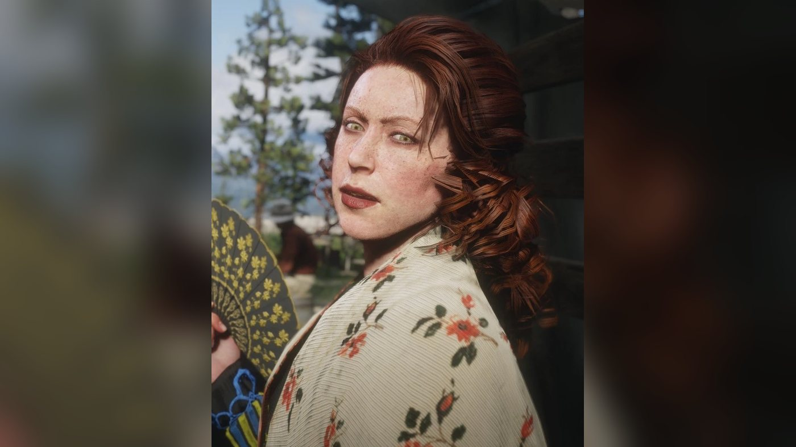
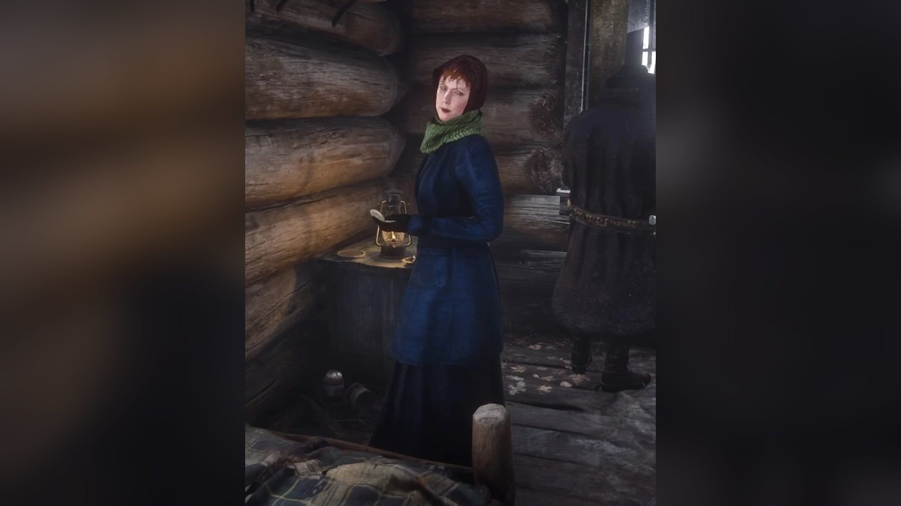
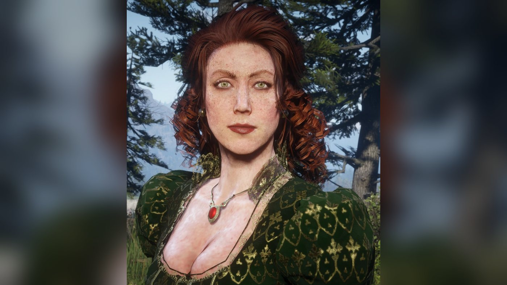
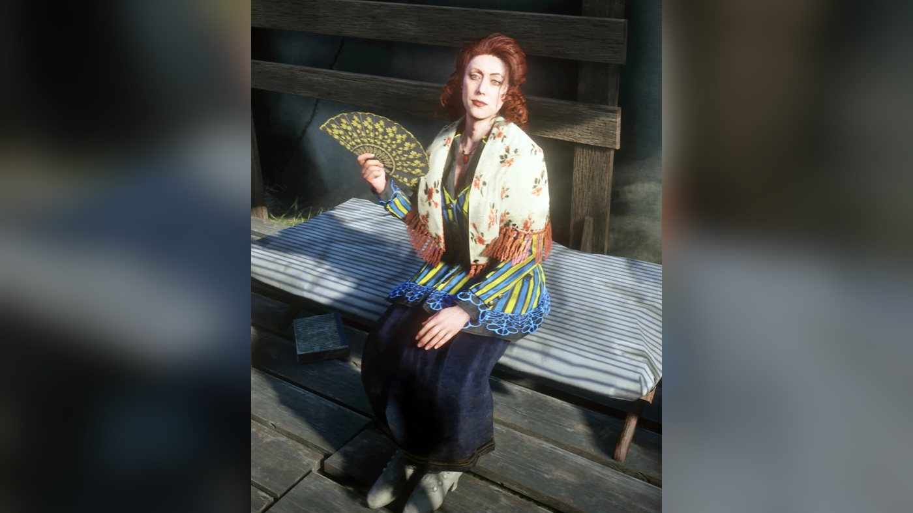
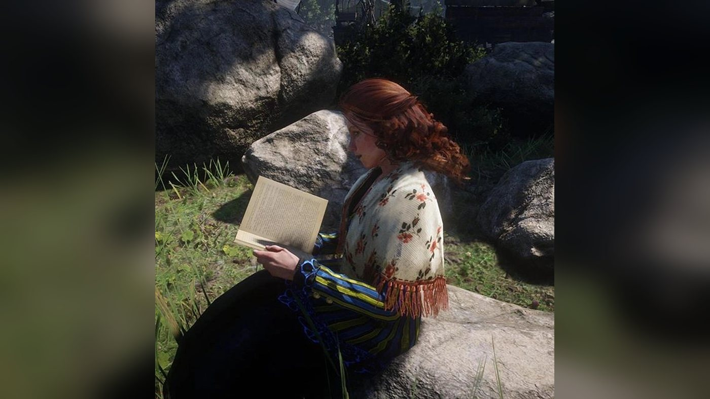
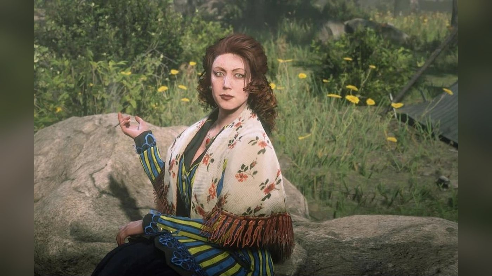
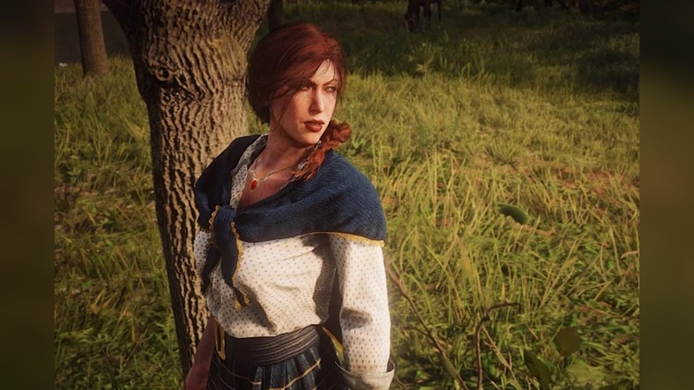
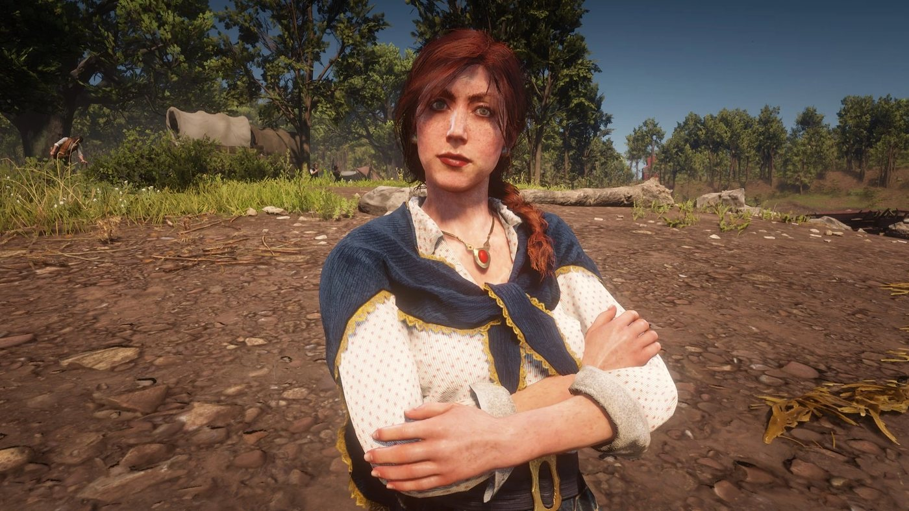
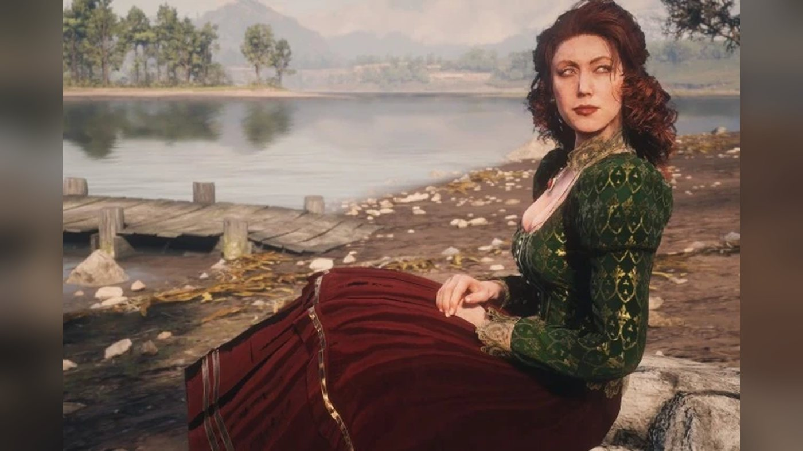
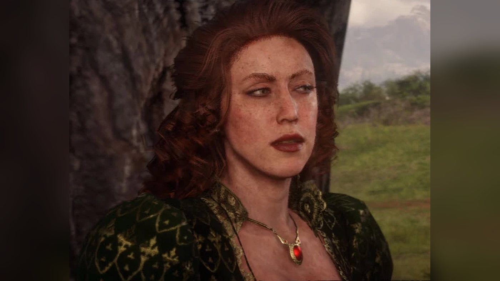
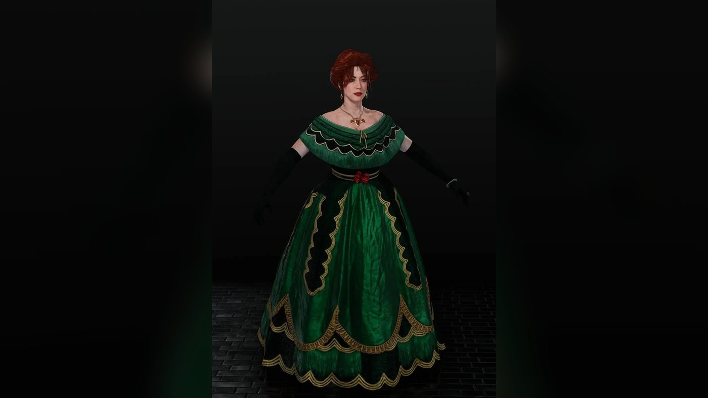